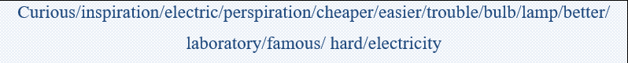
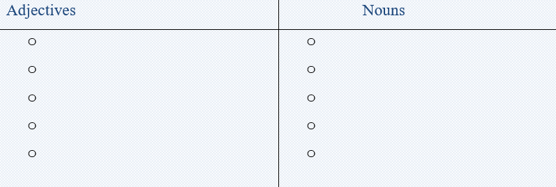
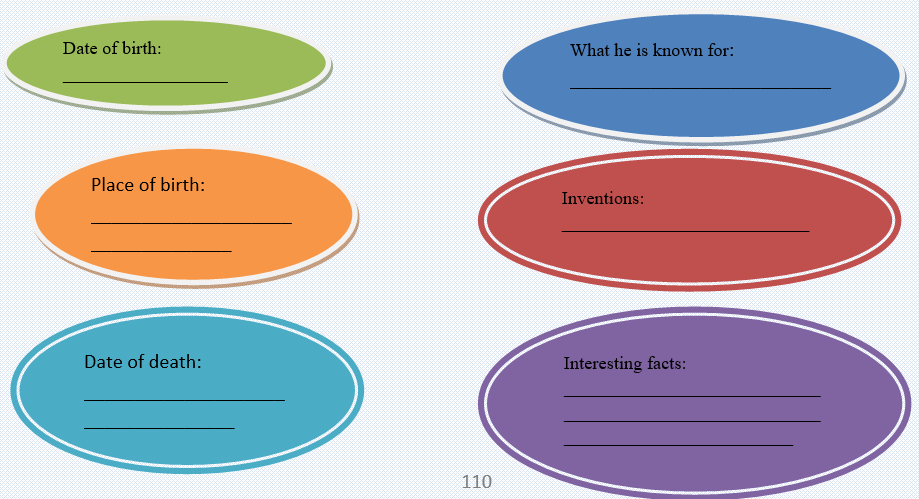

Thomas Edison was born in 1847 in Milan, Ohio. Young Tom didn't do very well in school, so his mother decided to teach him at home. She gave him lots of books to read. Tom was a curious boy. He always wanted to know how things worked. He liked to see if he could make them work better. His mother let him set up a laboratory in the house where he could experiment with things.
Edison's most famous invention was the light bulb. At the time, people used gas or oil lamps to light their homes. Edison knew it would be cheaper and easier to use electricity. The trouble was, nobody knew how to do it. Edison worked on his idea a long time. He tried lots of things that didn't work. But he didn't give up. He kept trying until one day it worked! Today, you can flip a switch and have light any time you want it.
Edison also invented the movie camera. When you go to the movies or watch TV, you can thank him for his ideas and hard work. Many of the electric machines you see at home or at school came from his ideas.
Inventing things was what Edison liked best. He thought about how things worked. Then he thought about how he could do it better. That is called inspiration. The hard part came next. Edison had to make his ideas work. He tried all kinds of things until he found exactly what would work. He called that perspiration. He said that invention was "one percent inspiration and ninety-nine percent perspiration."
Task1 Reading
Read the text and answer the questions.
🔸When and where was Edison born?
🔸Where did he experiment with things when he was young?
🔸What was his most famous invention?
🔸Can you name other inventions of his?
🔸What are his opinions about inspiration and perspiration?
Task2 Vocabulary and grammar
Sort out the words into adjectives and nouns.
Task2 Vocabulary and grammar
Sort out the words into adjectives and nouns.


Task3 Fill the table with the correct information about Thomas Edison

Are the sentences True(T) or False(F)?
1. The small wallets are £16. ____
2. The man wants a small wallet. ____
3. The man wants an umbrella. ____
4. The shop has not got any umbrellas. ____
5. The man buys a wallet for £19. ____